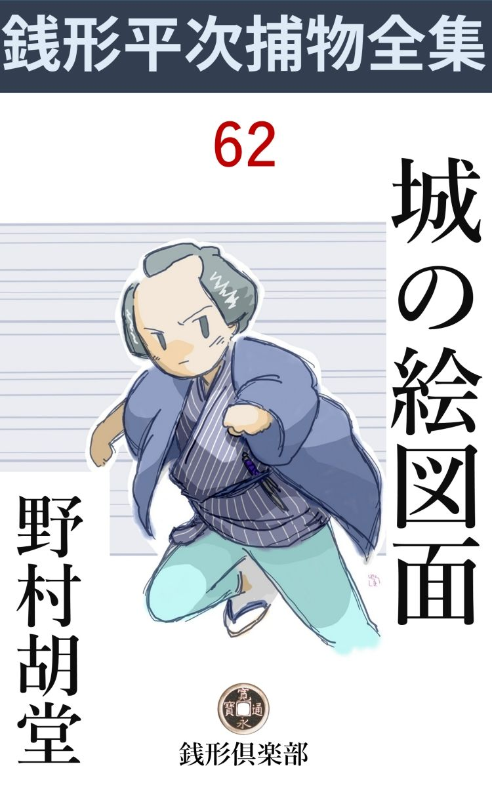
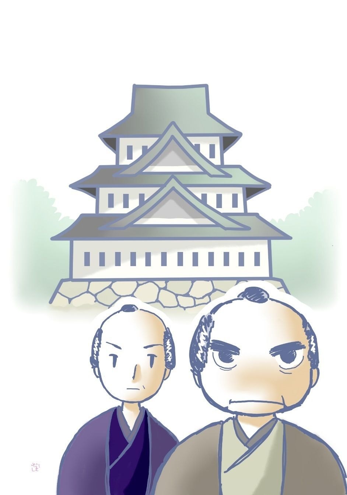

| 城の絵図面: 銭形平次捕物全集第62話 (銭形倶楽部) | |
| 野村胡堂 | |
| ZENIGATA CLUB (2018) | |

一
「親分、大変な野郎が来ましたぜ」
ガラッ八の八五郎は、拇指 で自分の肩越しに指しながら、入口の方へ顎 をしゃくって見せます。
「大変な野郎------？」
銭形の平次は、岡っ引には過ぎた物の本に吸付いて、顔を挙げようともしません。
「二本差 が二人------」
「馬鹿野郎、御武家を野郎呼ばわりする奴があるものか、無礼討にされても俺の知ったことじゃないぜ」
「でもね親分、立派な御武家が二人、敷居を舐 めるようにして、------平次殿御在宿ならば御目にかかりたい、主人姓名の儀は仔細あって申しかねるが、拙者は石 津 右 門 、大垣伊右衛門と申すもの------てやがる。まるでお芝居だね、へッ、へッ、へッ、へッ」
ガラッ八は箍 の抜けた桶 のように、手の付けようのない馬鹿笑いをするのです。
「御身分の方だろう、丁寧にお通し申すんだ。------その馬鹿笑いだけなんとか片付けろ、呆れた野郎だ」
小言をいいながら平次は、取散らかした部屋の中を片付けて、少し煎 餅 になった座蒲団を二枚、上座らしい方角へ直します。
「これは、平次殿か、飛んだ邪魔をいたす。拙者は石津右門------」
「拙者は大垣伊右衛門と申す者」
二人の武家は開き直って挨拶するのです。------石津右門というのは、五十前後の鬼が霍 乱 を患ったような悪相の武家、眼も鼻も口も大きい上に、渋 紙 色の皮膚、山のような両肩、身扮 も、腰の物も、代表型 な浅 黄 裏のくせに、声だけは妙に物優しく、折目正しい言葉にも、女のような柔かい響 があります。
大垣伊右衛門というのは、それより四つ五つ若く、これは美男と言ってもいいでしょう、秀 でた眉、高い鼻、少し大きいが紅い唇、謡 の地があるらしい錆 を含んだ声、口上も江戸前でハキハキしております。
「私が平次でございますが------御用は？」
平次は静かに顔をあげました。
「外ではない。町方の御用を勤める平次殿には、筋違いの仕事であろうが、人間二人三人の命に係わる大事、折入って頼みたいことがあって参った------」
石津右門は口を切るのです。
「拙者はさる大藩の国家老、ここにいられる大垣殿は江戸の御留守居じゃ。耻を申さねば判らぬが、三日前、当江戸上屋敷に、不 測 の大事が起り、拙者と大垣殿は既に腹まで掻切ろうといたしたが、一藩の興 廃 に拘 わる大事、一人や二人腹を切って済むことではない。------兎 やこう思案の果、さる人から平次殿の大 名 を承わり、良き知恵を拝借に参ったようなわけじゃ------」
四角几帳面 な話、聴いているだけでも肩の凝りそうなのを、ガラッ八はたまりかねて次の間へ避難しました。------平次殿の大名------から------良き知恵を拝借------が可笑しかったのです。
「旦那、お言葉中でございますが、あっし は町方の御用聞で、御武家や御大名方の紛 紜 に立ち入るわけには参りません。承わる前に、それはお断り申上げた方が宜しいようで------」
平次が尻ごみしたのも無理はありません。腹を切り損ねて飛込んで来た武家などは、どうも付き合い切れないと思ったのです。石津右門の辞色 は、何様以って容易のことではなかったのでした。
「------待った。平次殿、その言葉は一応もっともだが、これは何分にも大事の上の大事だ。二十万石の大々名が改 易 削 封 になれば、何百何千人の難儀ばかりでない。天下静 謐 の折柄、そのためにどんな騒ぎが持上がり、諸人の迷惑になろうも知れぬ------」
「承わりましょう、旦那、それほどまでに仰しゃるなら、ともかく、そのお話を承わってあっし でできることなら、何なりと致しましょう」
平次も度胸を決めました。この二人の武家はウンと言うまで、梃 でも動きそうもないのを見て取ったのです。
「それは辱 けない、流石 は義に勇む平次殿、世上の噂に偽りはない」
「おだてちゃいけません」
「実はこう言うわけだ------」
石津右門は語り出しました。
二
奥州のさる大藩の居城で、去年の大嵐 のために、石垣と天守が大破し、この儘に差し置いては危険この上もない有様なので、いよいよ何十年目かの大修復をすることになりました。
ところが、その頃の徳川慕府は、大名の浪人を召抱えることと、新城を築 くことは厳禁同様、修復、改造にも、恐ろしく神経を尖らせ、程度次第では、絵図面を引いて公儀の許しを受けなければ、謀 叛 同様に見 做 される場合もあったのです。
豊家恩顧の大名は代変りながらまだ諸国に残っている時なり、その上、天草騒動、由井正雪の陰 謀 などですっかり脅かされた幕府は、外 様 大名に対して、極度に警戒していたのも無理のないことでした。
もう一つ、運の悪いことは、石津右門等の藩というのは、幕府に睨まれて奥州へ転封させられたばかり、外様のうちでも、一番警戒されていた家柄だったのです。居城修復のため、江戸から神田末広町の棟梁 柏木藤兵衛という、有名な城大工を国許まで呼び寄せ、濠、石垣から、三の丸、二の丸、本丸の絵 図 面 を引かせ、その上、厳重にも厳重を極めた、修復の原案を書き加えて、家老石津右門、藤兵衛といっしょに絵図面を携 えて江戸表に着いたのは四五日前のことでした。
明日はその絵図面を竜の口に持参、公儀のお許を願出ようと言う時、棟梁の藤兵衛は、自分の引いた絵図面の中に気に入らないところがあるから、ほんのしばらく拝見したい------と、石津右門の渋 るのも構わず末広町の自宅に持って帰り、一と晩止めて、ほんの少しばかり手を入れた上、翌る日は上屋敷に持参、家老石津右門と、用人大垣伊右衛門立会の上、開いて見ると、これが真っ赤な偽物、------奥州のお城の絵図面とは似も付かぬ、藤兵衛が江戸で請 負 をした、寺や屋敷の絵図面と変っていたのです。

「それから三日間、藤兵衛の家は言うに及ばず、上屋敷まで調べたが、絵図面の行方は皆 暮 解 らない。その上、今朝江戸御留守居の大垣殿お長屋へ------国元居城の大修理は、籠城の用意と相見えた、謀 叛 の企 て証拠の品を揃えて、公儀へ訴出るがどうだ------という投手紙が飛び込んだ」
石津右門はこう語り進みます。
「------」
事の重大さに、平次も固唾 を呑むばかり。
「それを聴いて、棟梁の藤兵衛は今朝自害して相果て、御上屋敷においても、奥方様始め下々まで、安き心はない。折柄主君は御在国中、この上の思案も尽きて、平次殿の知恵を拝借に参ったのじゃ」
朴訥 な調子で語りおわると、石津右門はホッと溜息を吐きます。鬼の霍 乱 が萎 れ返った様子は、物の哀れを通り越して可笑しくなる位。
「平次殿、一藩の危急、枉 げて乗出して貰いたい」
大垣伊右衛門も畳に手を落しました。
「成程、承われば何百人何千人の難儀にもなる大事。いかにも、私で出来るだけの事はして見ましょうが------」
「それは辱 けない」
「大垣様のところへ投り込んだという手紙と、偽の絵図面を拝見出来ませんか」
「これじゃ、幸い用意して参ったが」
取出したのは、畳紙 に入れた畳二枚ほどの大絵図面が三枚と、半紙一枚に書いた結び文が一通、平次はそれをくり拡げて、しばらくは眺め入りました。
「結び文は随分下手な手蹟だが------いずれ文字などには馴れない者の仕業であろうな」
と差覗く石津右門。
「これは釣 筆 でございますよ、旦那」
「釣筆？」
「筆蹟を隠すために、天井 から糸で筆を釣って書くと、このようなフラフラした字になります」
「成程」
石津右門と大垣伊右衛門は、まず出発点から、平次に感服してしまいました。
「この偽の絵図面には棟梁柏木藤兵衛とありますね」
「左様、------それから、弟子、良助、太吉と書き添えてある」
「ともかく、末広町へ参って見ましょう」
「御上屋敷は？」
大垣伊右衛門です。
「末広町の棟梁が、お屋敷へ絵図面を持って参って、お二人にお目にかける迄、誰か手を掛けた者がなかったでしょうか」
「藤兵衛の家では、どんな事があったか知らぬが、御上屋敷へ持参したのは藤兵衛と弟子の良助の二人で、我ら両人と逢うまで、絵図面は二人の側に引付けて、寸 刻 も眼を離さなかったと言うことだ」
「それじゃ、絵図面は棟梁 の家で無くなったに決っております。さっそく末広町へ参りましょう」
平次は立ち上がって、もう出かける支度をしております。
三
末広町の藤兵衛というのは、曽 ては御大工頭中井主水の配下で、お城大工としては、江戸でも名誉の大棟梁、その後扶 持 に離れて、諸藩の御用を承わり、多勢の弟子を養っておりますが、絵図面の紛失に、よくよく思い詰めたものか、この日の朝、磨ぎすました鑿 で、喉を突いて相果てたのです。
平次とガラッ八が二人の武家に伴れられて行ったのは、この騒ぎの真っ最中、血潮と線香の匂いの瀰 漫 する中へ踏込んで、さすがの平次も胸を痛めましたが、背後には、もっと大きな災害が控えていることを考えて、委細構わず探索の手を拡げたのでした。
「もう一度家捜しをしようか、平次殿」
大垣伊右衛門は江戸者らしい気さくな調子で平次を顧みます。
「いえ、それには及びません。三日の間捜して解らない品が、あっし が捜したところで出て来るはずもございません」
「成程」
「それより、一人、一人、家の者や奉公人に逢って見ましょう、人相を見たら、また何とか思案も浮びましょう」
平次は一応出入口や間取りの工合を見た上、まず五、六人の奉公人を集めて、一わたり顔を見ました。何の用意があるわけでもありませんが、こうして生きた人間の表情の動きを見ているうちに、何か暗示 を掴むのが、平次の一つのやり口でもあったのです。
「死んだ棟梁が気の毒だと思うなら、みんな隠さずに知っていることを話してくれ」
「------」
平次のこういう意味は、よく奉公人達に通じた様子でした。
「ところで、失くなった絵図面がたった一晩ここへとめられた時、どこにどんな工合に置いてあったか、みんな知っているだろうな」
「それはよく知っていますよ、親分さん」
五、六人の声は一緒でした。物を隠すことを知らない正直な人達の顔を、平次は親 しい心持で見渡します。
「それを話してくれ。何でも知っていることを、みんなぶちまけてくれさえすれば、棟梁の敵は俺が討ってやる」
平次の誘いの壺 にはまって、------藤兵衛は四日前の昼過ぎ畳紙 に入れた大きな物を、風呂敷に包んで帰った事や、それを夜中まで拡げて、首を捻ったり、手を入れたりした上、元の通り畳んで神棚に供え、自分は一晩その下で寝た事、翌る日は辰刻 半 頃（九時）、包みのまま持ってお屋敷へ行ったことまで、手に取る如く解りました。
「お前は？」
始終黙っている一人の娘を、平次は指しました。
「あの、私は、何にも知りません」
「何と言う」
「私の名で？ ------杉と申します」
十七八の素直そうな娘ですが、すっかり脅 えて、小さくなってしまいます。
「仕事は？」
「お嬢さんの身の廻りのお世話をしたり、いろいろの事をしております」
お城大工の柏木藤兵衛は、早く配偶 を失って娘のお勇一人を相手に、淋しく暮していたのです。曽つては御作事奉行の下に、十人扶持を食んだ藤兵衛ですから、娘もお嬢さん育ちだったのに、何の不思議もありません。
「棟梁 の床は誰がとる？」
「お杉さんですよ、親分」
誰やら後ろの方で言う者があります。
「その晩に限って、神棚の下に寝た棟梁だ。その床の世話をしたお前が、絵図面に気がつかなかったと言うのか」
「ハイ、イーエ」
お杉は青くなってしまいました。
「一晩絵図面の番をした棟梁でも、朝になれば手洗 も使い、飯も食うだろう。その間神棚の下にいたのは誰だ」
「お杉さんですよ、親分」
また誰やらが声をかけます。
四
多勢の弟子職人の間には、棟梁 に叱られた者も、怨んでいるものもないとは限りませんが、その晩から朝へかけて、棟梁の部屋に入った者も、神棚の下に近づいた者もありません。
その中で神棚に近づいたのはたった二人、藤兵衛の身の廻りの世話をしたお杉と、娘のお勇の外にはありません。平次は転 じて娘のお勇に訊ねました。
「お勇さん、親が命を投出したほどの大事だ。この絵図面を捜し出さなきゃ、大名が一軒潰 れるぜ」
「------」
「知っていることを隠しただけでも、どんなに罪が深いか知れない。打ち明けて話してくれまいか」
誰も聴かないところで、平次は娘のお勇へこう説いたのです。下女のお杉は何か知っているに違いありませんが、弱々しく頼りないように見えるくせに、何と責めても口を開 かず、この娘をこんなに強情にするのは、恋人か主人の外にはないと見込んだ平次は、取あえず、藤兵衛の娘お勇の口から、事件の鍵 を引出そうとしたのでした。
「------では、この場限りでございますよ、親分さん」
お勇はとうとう口を割りました。その頃にしては少し薹 の立ちかけた二 十 歳 、さして美しくはありませんが、育ちのせいか垢 抜 けがして、娘らしい魅力に申分はありません。
「悪気でした事でなければ、決して人に言ったり、お前を罪に落すような事はしない、------一体どんな事があったんだ」
「------」
そう言われると、お勇はさすがに気が挫 けます。言って退 けようか、言わずに済まそうか、しばらくは迷っている様子でした。
「手紙を書いたんじゃあるまいな、大垣伊右衛門様へ------」
平次は先刻の手紙------釣 筆 で書きながら、何となく女の筆跡らしいのを思い出したのです。
「いえ、そんな事は存じません」
「では？」
「申しましょう。却って変な疑いを受けては困ります」
「その通りだよ、お勇さん」
「今では後悔しておりますが、お杉に言い付けて、父さんが御飯のうちに、神棚の絵 図 面 を取らせたのは私でございます」
「------」
「親分さん、びっくりなすったでしょう。本当に悪いことをしました。でも、その絵図面が、どんなに大事なものか、薄々は知っていましたので、私の部屋の置 床 の上へ置いて、すぐ元の神棚へ行って見ると------」
「直 ぐ？」
「何か気がかりで、凝 っとしていられませんでした。そっと元の神棚のところへ行って見ると------、神棚には、ツイ今しがたお杉に取らせて、自分の部屋へ置いて来たばかりの畳紙 に入った絵図面が供えてあるではございませんか」
「------」
お勇の話はかなり変っております。
「しばらくは呆気 に取られておりましたが、念のために私の部屋へ帰って見ると、そこに置いたはずの絵図面がございません」
「------」
「そのうちに父さんは、神棚の絵図面を取りおろして、お屋敷へ行ったので、その儘になってしまいました。誰か、私がウロウロしているうちに、私を懲 してやるつもりで、私の部屋の絵図面を取って、神棚へ返したこととばかり思い込んでおりました」
「------」
「お杉に訊いても、良助に訊いても、そんな事は知らないと言いますが------」
良助というのは、太吉と共に、死んだ藤兵衛の大事な弟子であったことは偽 絵 図 面 に書いた名で平次も知っております。
「どうして、神棚から絵図面を取る気になったんだ、誰に頼まれたんだ」
不思議な娘心を、平次も追及 せずにはおられません。
「父さんが、あんまりだったんです、三年も前からの約束を、反 古 にする気なんですもの。------私はツイ、絵図面を隠して、ほんの半日でも父さんを困らせ、三年前の約束を思い出させたかったんです」
「------」
平次は二十歳 娘の盲目な恋を火のように近々と感じておりました。が、追及 したところで、これ以上は言わなかったでしょう。
奉公人達の心持や口裏を探ると、------お勇と三年前に約束したのは、内弟子の良助で、いずれは婿 に容れて、藤兵衛の跡 を継がせる口約束までしましたが、男振りに似合わず、腕の鈍い良助は、次第に藤兵衛に愛想 を尽かされて、近頃は努めて、娘をやる約束を、忘れさせようとしている様子だったのです。
とうとう嫁入の時期を遅らせて、二十歳 島田の歎きを見たお勇が、近くこの家 から放り出されそうな良助のために、大事な絵図面を隠して、一か八かの大論判を、父親と開くつもりだったのでしょう。
五
「親分------曲者は同じような畳 紙を用意して、お杉が出た後、偽絵図面を神棚へ供え、大急ぎでお勇の部屋から真 物 を掻っ払ったのだね」
とガラッ八の八五郎、なかなかに穿 ったことを言います。
「その通りさ、------ただ、同じような畳 紙まで用意するのは、企 らみが深いな」
と平次。
「でも、どんなに企らみが深くても、外 から持って来たのではないでしょう。畳紙の中に入っていたのは、この家 の仕事場の抽 斗 に入っていた、寺や屋敷の下絵図面だと言うから」
ガラッ八の今日の頭の良さ。
「------」
平次は黙りこくって考えております。
それから、藤兵衛の死体を納めた一間を覗いて見ました。まだ入棺 もせず、北枕に寝かして、逆 さ屏風 を廻した前に、弟子の良助と太吉がしきりに香を捻 っております。
どちらも二十七八、坐り馴れない様子でモジモジして迎えましたが、良助というのは、娘のお勇が執心するだけの好い男、太吉というのは、堅い一方といった、職人にしては、真面目過ぎるくらいの平凡な男です。
「棟梁 の自害したのを一番先に見つけたのは、誰だとか言ったね」
平次は二人を等分に見ました。------自害 を見つけたのは、早 起 の良助と太吉、雨戸を繰って、春の朝風を入れる時、この惨 事 に気がついた------ということは、先刻他の奉公人達から聴いたことでした。
「あっし共二人でいっしょでしたよ、親分」
良助は膝っ小僧を揃えました。
「一緒ということはあるまい、少しは遅い早いがあるだろう」
「見つけたのは私で、------大きな声を出すと、兄哥 が飛込んで、親方を後ろから抱き起しました」
太吉は注 を入れます。
「その時はもう息が絶えていたのだね」
「着換 をして床の上へ坐ったまま、鑿 で喉 を突いておりましたが、------」
良助はそう言ってゴクリと固唾 を呑みました。
「遺書 があったはずだが------」
平次の自信に充ちた調子が、すっかり二人を驚かした様子です。
「兄哥」
「------」
太吉は良助を顧みました。
「出した方がいいぜ。つまらねえことをして、痛くもない腹を探られるのも業 腹 だ」
太吉の落着いた声が、妙に人を動かします。
「親分、済みません、ツイふらふらと隠してしまいました。あっし には我慢が出来なかったので------」
良助は立ち上がると、部屋の隅の襖 の引手を一つ外しました。中から引出したのは、半切に書いた遺 書 が一通。
「どれどれ」
平次も、石津右門も、大垣伊右衛門も首を鳩 めました。が、遺書は一向平凡なもので、絵図面紛失の責 を負って死ぬことと、娘のお勇は、良助を諦めて、親類方の決めてくれる婿を容れ、柏木藤兵衛の跡を立ててくれるように------ということで終っております。
「遺書 を隠したことを、お勇は知っているのか」
平次は良助の恐れ入った顔を顧 みました。
「飛んでもない、親分。そんな事を言われるはずもありません」
これが、良助と太吉から得た全部です。
六
平次はいろいろ考えました。
藤兵衛が隣の部屋で食事をしている間に、誰かが藤兵衛に知れないように神棚に偽の畳紙 を置いて、すぐお勇の部屋へ引返し、置床の上から、真 物 の畳紙を持って行くことが出来るでしょうか。
神棚のある部屋から、お勇の部屋に行く通路を研究して見ましたが、お杉やお勇に姿を見せずに、そんな器用なことをやり遂げるのは、藤兵衛自身の外にはありません。つまり、藤兵衛に姿を見られずに、畳紙を置き換 えられるのは、お杉とお勇以外は藤兵衛自身が一番都合が良いと言うことになるのです。藤兵衛が畳紙を置き換えたり盗んだりすることがあり得るでしょうか。
「旦那方、これはあっし の手に了 えません。少し考えさして下さいませんか」
半日無駄にした上、平次はとうとう音をあげてしまいました。
「曲者の見当も付かぬと言うのか」
石津右門と、大垣伊右衛門の顔の暗さ。
「見当は付いております」
「誰じゃ」
と石津右門。
「畳紙を置き換えられるのは、死んだ藤兵衛の外にはありません」
「藤兵衛が------、自分で絵図面を掏 り換 えたというのか」
「だから変じゃございませんか、もういちど考え直してみましょう」
「フーム」
平次はそれっ切り引揚げました。この上頑 張 っていても、何の手掛りも見つかりそうはなかったのです。
「親分」
帰りを急ぐ途々、ガラッ八の不服そうな顔というものはありません。
「何だ、八」
「何だって投げてしまったんで、------親分らしくもないじゃありませんか」
「世の中には詮索 して良いことと悪いこととあるよ」
「へエ------」
平次の言葉は謎 のようでした。
「死んだ藤兵衛へ縄を打つ法はあるまい」
「藤兵衛が本当に畳 紙を置き換えたんでしょうか」
「多分、そんな事だろう」
「自分の手にある絵図面を、偽物と換えるのはわけが解らないじゃありませんか。それも奥州 下 りまで行って骨を折って描いた絵図面じゃありませんか」
ガラッ八は一生懸命に藤兵衛のために弁じます。
「その通りだよ。だがな八、同じような畳紙を急に手に入れて、真 物 と掏り換えるなんてことは、外の者には出来ないよ。藤兵衛なら前から用意しておけるはずだ」
「でも変じゃありませんか」
「それに、藤兵衛ほどの者が、神棚から畳紙をおろしたまま一応中を改めずに、上屋敷へ持って行くはずはない」
「成程ね」
「藤兵衛が自分でやったとなると事面倒だ。うっかりすると、飛んだことになる」
「サア解らねえ、何が飛んだことでしょう、親分。第一、藤兵衛が自分の手許にある絵図面を偽物と換えて、真物をどこへやったでしょう」
ガラッ八には益々解らなくなる事ばかりです。
「ね、八、藤兵衛は御作事 奉行付棟梁 で、近頃まで十人扶持を頂いていたんだよ」
「------」
「解らないのか、八」
「隠密 ？」
「シッ、大きい声じゃ言えねえが、石 津 さんの御主人という殿様は、大公儀から睨まれ通しだ。近頃はお国許に引籠り、病気の御届を出して、容易に参府もしないと言う噂じゃないか。異心のありそうな大名の城や濠 の絵図面を、藤兵衛から無理にでも借り出すのは誰だと思う------」
「------」
ガラッ八は仰天しました。平次の話があまりに大袈裟 です。
「たぶん一日か二日で藤兵衛の手へ返すつもりだったろう。藤兵衛はそれを待って三日頑張ったが、絵図面は返らぬ、------畳二枚ほどもあって、その上念入りに細 密 な絵図面だから、二日や三日では、写 し切れなかったのだろう」
「親分、それは本当でしょうか」
「嘘かも知れない、------いや嘘であってくれるとよい。もし本当なら、公 儀 に睨まれているあの御藩中は、今に大変なことになるだろうよ」
平次はまだ腑に落ちないものがある様子です。
七
絵図面事件は、これがほんの序 で、これから、思わぬ方向へ展開して行きました。
江戸開府以来の名御用聞と言われた平次も、この時ほどひどい失 策 をやったことはありません。
それから三日目。
「親分、大変なことになりましたぜ」
飛込んで来たのは、早耳のガラッ八でした。
「何だ、お前の大変は食い飽きているが」
「冗談じゃねえ、------末広町の藤兵衛棟梁のところの太吉が殺されたことを御存じですかい、親分」
「何？ 太吉が殺された。しまった、八」
平次は何も彼 も投り出して立上がりました。
「驚くでしょう、親分」
「最初からやり直しだ、八。行って見よう」
「へエ------」
八五郎に否も応もありません。二人は宙を飛んで末広町へ------。
柏木では主人藤兵衛が死んで、三日目のこの騒ぎに、真に上を下への顚 倒 ぶりです。
「太吉は昨夜家を明けて、暁方帰って来た様子でした。殺されたのは、それから間もなくでしょう」
そう言って案内してくれたのは、太吉とは兄弟分の------但 しあまり仲のよくない良助です。
「これは？」
平次は木戸を押しあけ、筵 を払って驚きました。まだ検屍のすまぬ太吉の死骸は、薄 湿 りの大地の上に、朱を浴びた襤 褸 切 のように倒れていたのです。
傷は一刀の下に斬下げた、見事な後ろ袈裟 、虚 空 を掴んで仰 反 った太吉の顔は、夥 しい出血に、紙よりも白くなっております。
「八、死骸の懐中を見てくれ」
「へエ------」
八五郎はさすがに躊躇 しましたが、それでも平次に促 される前に、死骸の懐中へ深く手を差し込みました。
「おや」
ズルズルと引出したのは、紐の長々と付いた財布、中には小粒か少しばかり、別に大した品もありません。
「すまねえが、太吉の部屋を見せて貰おうか」
「へエ------」
良助に案内されて行ったのは、裏の三畳、大して汚 くはありませんが、地味で実際的な太吉の部屋らしく、何の飾りもない殺風景極まるものでした。
「荷物を見たいが」
「へエ------」
押入を開けて引出したのは、葛籠 が一つ、蓋を払って見ると、半 纏 や股 引 の外は、ほんの少しばかりの着換えがあるだけですが、葛籠の目方が、見てくれより少し重いことに平次は気がつきました。
中の物をみんな出して、底に張った紙を剥すと、
「あッ」
ガラッ八が驚いたのも無理はありません。葛籠の底から出た小判は、ざっと五、六十枚、燦 然 たる真新しい山吹色が、部屋一パイに咲きこぼれます。
（太吉がこんな大金を持っているはずはない）
平次の頭脳は急速に旋回 を始めました。
お城大工の弟子が、どんなに堅い人間であったにしても、十両と溜めているはずはありません。続いて浮ぶ考えは、
（誰か太吉へ金をやった者があるに違いない）
ということでした。
（どうかしたら、絵図面を売った金かも知れない）
併し、売るためには絵図面を手に入れなければなりませんが、あの朝、太吉は良助達といっしょに仕事場にいたことは明かで、どう考えても、藤兵衛やお勇の眼を盗んで、絵図面を手に入れる工夫はなかったはずです。
（では、強請 って取った金ではないか）
ここまで考えると平次は、
「八、死んだ藤兵衛が、絵図面がなくなってから死ぬまで三日の間、外へ出たことがないか、誰か藤兵衛を訪ねて来た人はないか、手紙か何か、使い屋に頼まなかったか、それだけのことを訊いて来てくれ」
「へエ------」
「出来るだけ詳 しい方が宜い。奉公人達一人残らず当って見ることだよ」
「へエ------」
ガラッ八は何が何やら解らぬながら、忠実な犬 のように飛んで行きました。
平次はそれ以上踏み止ってはいませんでした。その足ですぐ、石津右門のいる、大名の上屋敷へ向って行ったのです。
名乗るとすぐ通してくれたのは、奥まった一室、石津右門相変らず鬼の霍 乱 見たいな顔に、欝 陶 しい皺 を刻んで出て来ました。
「どうした、平次殿」
「『殿』は困りますよ、旦那、冷かされているようで------」
「そんな事はどうでもいい、絵図面はどうした」
「急には出て来ませんが、------実は公儀 隠 密 の手に入ったことと思い込んで、心配いたしましたが、満更そうでもなかったようで------」
「何？ 公儀隠密？」
「大丈夫ですよ、旦那。隠密なら太吉に強請 られるはずもなく太吉にあんな金をやるはずもありません」
「太吉がどうした？」
「殺されましたよ。後ろ袈裟にバッサリ、曲者は余っ程の手 利 でしょう」
「それは大変」
石津右門も驚いた様子ですが、事件には何の判断もつきません。
「ところで、殿様は何時 頃御参府でしょう」
平次は妙なことを問いました。
「それが解らぬ、何分公儀へは御病気の御届が出ているくらいだから」
「うんと脅 しておやんなさいまし、殿様が江戸へ出ていらっしゃると、絵図面も大抵もどります」
「何を申す、平次」
「それから、一寸伺っておきますが、石津の旦那は、殿様の御一門でしょう」
「遠い遠い血筋を引いている」
「大垣の旦那は、奥方の叔父さんで？」
「その通りだ」
「お二人で一生懸命お国許の殿様御参府をお願いして御覧なさいまし」
「毎度やっているぞ」
「今度は絵図面が紛失 して、お家の安危に関 わるから、断 って御出府を願いたいと仰しゃればいいんで------」
「よしよし」
石津右門は、さしたる自信もなくうなずきます。
八
「親分、とうとう三輪 の親分が乗出しましたぜ」
ガラッ八はプリプリして帰って来ました。
「良助を縛ったろう？」
と平次、三輪の万七ならそんな事をやりかねないと思ったのです。
「どこで聴きました、親分」
「聴かなくたって解っているよ。良助が藤兵衛の遺書 を隠したのを、太吉に素破 抜かれた上、日頃仲が悪いから、太吉を殺したに相違ないと言うんだろう」
「その通りですよ、親分。まるで天眼 通 だ」
「三輪の兄哥のやりそうなことだ。でも、後で気の毒になるから、お前、これだけの事を言ってやるがいい。あの袈 裟 斬 は手際が良過ぎるから、良助じゃあるまい------とな」
「あっし もそれを言いましたよ。それに刀が見つかりません」
「で------？」
「三輪の親分は相手にしませんよ」
「ところで、先刻頼んだ事は解ったか」
平次は題目を変えました。
「大抵解った積りです。藤兵衛は上屋敷から帰った晩から、自 害 する日まで、一歩も外へ出なかったそうです」
「フーム」
「石津様と大垣様の外には、人も手紙も来なかったし、使い屋を頼んだこともないそうです」
「有難い、それで解った」
「何が解ったんで？ 親分」
「絵図面を手に入れたのは、隠密でも何でもないと解ったのさ」
「へエ------」
「馬鹿だな、八、あんな詰 らねえ事に感心しやがって、手前が感心なんかするから、俺まで釣 られて、飛んでもない方へ行くじゃないか」
「へエ------」
何を叱られているのか、ガラッ八には一向見当もつかぬ様子です。
「隠密の仕業なら藤兵衛から真物 の絵図面を受取ったはずだ。ところが藤兵衛は外へも出ず、人にも逢わない」
「------」
「隠密なら、御用人の大垣さんへ、あんな底を割った結び文などを投 り込むはずはない」
「------」
「隠密なら、太吉へあんな大金をやるはずもなく、------太吉を殺すはずもない。太吉を手先に使ったものなら、この先ももう少し使うはずだ」
「解りましたよ、親分、絵図面を換えたのは、藤兵衛じゃないと言うんでしょう」
「その通りさ。八、何だって今までそう言ってくれないんだ」
「親分の気の付かないような事が、あっし に解る道理がないじゃありませんか」
「どう致しまして」
二人は顔を見合せて擽 ぐったく笑いました。
「で、親分、絵図面を置き換えたのは、やはり太吉で------？」
「それは違う、太吉にはそんな事が出来なかったはずだ」
「すると」
「来るがいい。俺にはようやく曲者の正体が解ったよ。------神 棚 の絵図面を偽物と置き換えた人間の顔を見せてやる」
二人はもういちど末広町へ。
------その時はもう、春の陽が暮れて、街々に朧 の夜が裾を引き始めておりました。
九
「あっ、危ない。------見られたくない人間がいる、そっと身体を隠せ」
平次に囁 かれると、そんな事には馴れたガラッ八は、早くも塀の蔭に身を潜 めました。
柏木 の棟梁 の家------死んだ藤兵衛の家の裏口のあたりに、ゆらりと動く人影、銭形平次の早い眼が、それを見付けたのです。
二つ三つ小さい柏手 が鳴ります。何かの合図でしょう。
間もなく裏木戸が開いて、チョロチョロ出たのは、一と廻り小さい人影、外 に待っている影にピタリと寄り添ったと思うと、不意に------
「------」
押し潰されたような声がします。眼を挙げると、朧 の中に、必死と揉み合うのは、内と外から合図をして逢った二つの影 法 師 ではありませんか。
「八、生命がけだぞ、来いッ」
平次は疾風 の如く飛びました。
「御用ッ」
------後から続くのは、八五郎自慢の叱咤 です。大きい影は、この形勢を見ると、小さい影を突放して、キラリと一刀を抜きました。
「------」
平次は頃合を測 って足を止めると、袂 を探って取出した得意の青銭、右手は颯 っと挙ります。朧を剪 って飛ぶ投げ銭、二枚、五枚、七枚。
「あッ」
曲者は、肘 を打たれ、刃を打たれ、最後に額を打たれました。
「御用ッ、神妙にせいッ」
八五郎の声に驚いて、バラバラと飛んで来たのは、藤兵衛の弟子、喧嘩と弥次馬では、断じて引けを取らないのが十五、六人。
「逃げるか、野郎」
追いすがる八五郎の鼻先へ、一刀を閃 めかした曲者、身を翻 えしたと見るや、路地の外へ、バラバラと逃げ出します。
「御用ッ」
追いすがる八五郎。
「八、止せ------捕まえちゃ悪いことがある」
平次の声に、猟犬のようにいきり立つ八五郎は、ようやく足を踏 み止 めました。
「大丈夫ですか、親分」
「正体は判っている、安心するがいい。それよりは此方が大事だ」
裏口のドブ板の上に倒れて、半死半生の姿になっているのは、下女のお杉、あの気のきいた十八娘の可 憐 な姿でした。
曲者に喉 を絞められて、既に危ういところでしたが、平次の救いが間に合って、辛 くも命を取り止めたのです。小半刻経って漸く元気になってから、多勢で責め問いましたが、お杉は泣いてばかりいて何にも言おうとはしません。
「よしよし、気が落着いたなら言うがいい。あの人に遠慮することはないよ、今頃はもう腹でも切っているだろうから」
平次はひどく心得たことを言うのです。それから間もなく、平次とガラッ八は、上屋敷の石津右門を訪ねておりました。
「心配をかけたが、絵図面は戻ったよ」
石津右門の醜 い顔は、二人を迎えて、沈痛に歪 みます。
「大垣様は、腹を召されたでしょう」
と平次。
「お察しの通りだ。が、どうしてそれを」
何も彼も見透した平次の言葉に、石津右門も舌 を巻いた様子です。
「大垣様の細工は、参覲 交代を怠 らせられる殿様の御身の上を案じての事、人間二人の命を縮 め、その上、気の毒な娘までも手に掛けようとしたのは許し難いことですが------お気の毒でございます」
「それに大垣氏は、奥方の御身の上や一藩の運命も気遣ったのじゃ。内聞にしてくれるであろうな、平次殿」
石津右門はまた畳の上へ手を突きそうです。
国許の妾 の愛に溺れて、病気と称して参覲を怠る殿様、公儀の思 惑 を測 り、姪 の奥方の悲歎を察し、絵図面を隠して、殿の参府を促 そうとした、大垣伊右衛門の苦衷は、善悪はともかく、同情してやりたい平次でした。
「では、これでお暇いたします」
「飛んだ骨折であった喃 、平次殿、恩に被 るぞ」
「------」
平次は黙礼したまま八五郎を促して引下がりました。
× ×
その帰り途。
「親分、下女のお杉が大垣の手先になっていたとは気がつかなかったね」
ガラッ八は絵解きがして貰いたそうです。
「娘のお勇に頼まれて、真物の絵図面の入った畳 紙を盗み、その後へ大垣に頼まれた畳紙へ、在り合せの偽の下絵図を入れておいたとは気がつかなかったよ、------お勇に頼まれなければ、ただ真物と偽物を代えておく積りだったろう」
「娘の部屋から真物をさらって、大垣へ渡したのでしょうね」
「その通りだ。あのお杉という娘は、思いの外の知恵者さ。でも藤兵衛が自害したので、すっかり顚 倒 していたよ、------俺はあの時気がつくはずだったが------藤兵衛を疑ったばかりにお杉には気がつかなかったのは不覚さ。まさか真物を盗んで、偽物を置くとは思わないからなア」
平次もこんな馬鹿な盲点 に引っ掛って騙 されたことはありません。
「太吉を殺したのは、どうしたんでしょう、親分」
「何でもないよ、太吉は何んかの都合で大垣の仕業と知って、強 請 ったのさ。相手は、悪者ならもう少し考えるだろうが、大垣のような肌合の人間だから、我慢がならなかったろう。一度は金をやったが、二度目には斬られたのは自業自得というものだろう」
そう聴けば、何の疑いも残りません。
「お杉は？」
「明日行って訊くがいい、------多分、大垣の縁故 の者だろう。金ずくでやれる仕事じゃないよ。あんな危ない仕事をさした上、口を塞 ぐ気になったのは、大垣も少し血迷ったのだろう。家も屋敷も大事には相違ないが、妾狂いの殿様を江戸へ呼ぶために、殺さなくともいい人間を虫のように殺すのは少し罪が深いね」
平次は薄寒そうに襟をかき合せました。桜の莟 のふくらむような生温かい春の宵です。寒いのは多分平次の気持のせいでしょう。
（編注）
作品中には、身体の障害や人権にかかわる、差別的な語句や表現が見られますが、本書が成立した当時の時代背景等が現代とは異なる古典的な文学作品でもあり、著者が故人でもありますので、底本のままとしました。ご理解、ご諒承のほどをお願い申し上げます。
著者---野村胡堂
挿絵---萩 柚月 © 2017
初出---「オール讀物」昭和十二年四月号 文藝春秋社
底本---「錢形平次捕物全集」第三巻 河出書房 昭和三十一年六月十五日初版
編集・発行 銭形倶楽部